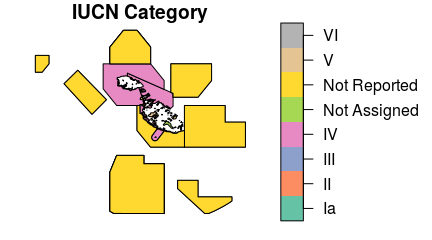

wdpar: Interface to the World Database on Protected Areas
Overview
The wdpar R package provides an interface to the World Database on Protected Areas (WDPA). It provides functions for automatically downloading data (from Protected Planet) and cleaning data following best practices (outlined in Butchart et al. 2015 and Runge et al. 2015). These functions are designed to be scalable and can employ parallel processing to complete data processing in a feasible period of time.
Installation
To install the developmental version of wdpar, use the following R code:
if (!require(devtools))
install.packages("devtools")
devtools::install_github("jeffreyhanson/wdpar")Note that this package requires the developmental version of the sf R package. If you have trouble installing this package, check out its installation instructions.
Example usage
Here we will provide a short introduction to the wdpar package.
First, we will load the package. Note that it automatically attaches the sf and dplyr packages so that we can explore the data set.
# load package
library(wdpar)Now we will download protected area data for Malta. Note that we could have alternatively downloaded the data using Malta’s ISO3 code (MLT).
# download protected area data for Malta
mlt_raw_pa_data <- wdpa_fetch("Malta")Next, we will clean the data set. Note that we will only use a single thread for data processing, but you could use the threads argument to use multiple threads for data processing. See the help page for wdpa_clean for a detailed description on the data cleaning process.
# clean Malta data
mlt_pa_data <- wdpa_clean(mlt_raw_pa_data)Now that we have finished cleaning the data, let’s calculate some statistics. We can calculate the total amount of area inside inside Malta’s protected area system (km\(^2\)). Note that this includes marine and terrestrial protected areas.
# calculate total amount of area inside protected areas (km^2)
statistic <- mlt_pa_data %>%
as.data.frame %>%
summarize(area = sum(AREA_KM2))
# print statistic
print(statistic)## area
## 1 13239.2We can also calculate the percentage of land inside protected areas that are designated strictly to protect biodiversity (and also potentially geological/geomorphological features).
# fetch spatial data for Malta's land mass and calculate its area (km^2)
mlt_land_data <- land_and_eez_fetch("Malta") %>%
filter(TYPE == "LAND") %>%
summarize(area = st_area(.)) %>%
mutate(area = as.numeric(units::set_units(area, km^2)))
# calculate percentage of land inside protected areas (km^2)
statistic <- mlt_pa_data %>%
as.data.frame %>%
filter(MARINE == "terrestrial", IUCN_CAT == "Ia") %>%
summarize(area_protected = sum(AREA_KM2)) %>%
mutate(total_land_area = mlt_land_data[["area"]]) %>%
mutate(percentage_protected = (area_protected / total_land_area) *
100)
# print statistic
print(statistic)## area_protected total_land_area percentage_protected
## 1 0.2503843 494.9871 0.05058401Finally, let’s plot a map showing Malta’s protected areas and color each area according to its management category.
mlt_pa_data %>%
select(IUCN_CAT) %>%
plot(main = "IUCN Category", key.size = lcm("4"))
Citation
Please use the following references for citing the wdpar R package and the World Database on Protected Areas (WDPA) in publications.
To cite the wdpar package in publications, use:
UNEP-WCMC and IUCN (year), Protected Planet: The World Database
on Protected Areas (WDPA), [insert month/year of the version
downloaded], Cambridge, UK: UNEP-WCMC and IUCN. Available at:
www.protectedplanet.net.
Hanson JO (2017) wdpar: Interface to the World Database on
Protected Areas. R package version 0.0.0.1 Available at:
https://github.com/jeffreyhanson/wdpar
Please cite both the World Database on Protected Areas data set
and this package.
To see these entries in BibTeX format, use 'print(<citation>,
bibtex=TRUE)', 'toBibtex(.)', or set
'options(citation.bibtex.max=999)'.